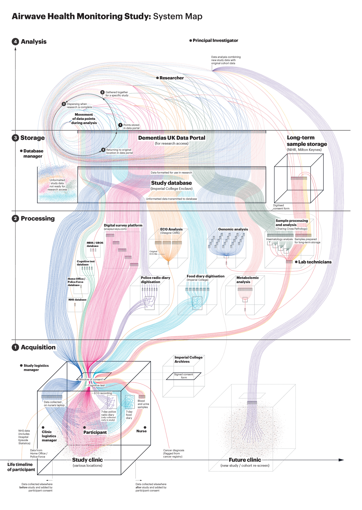
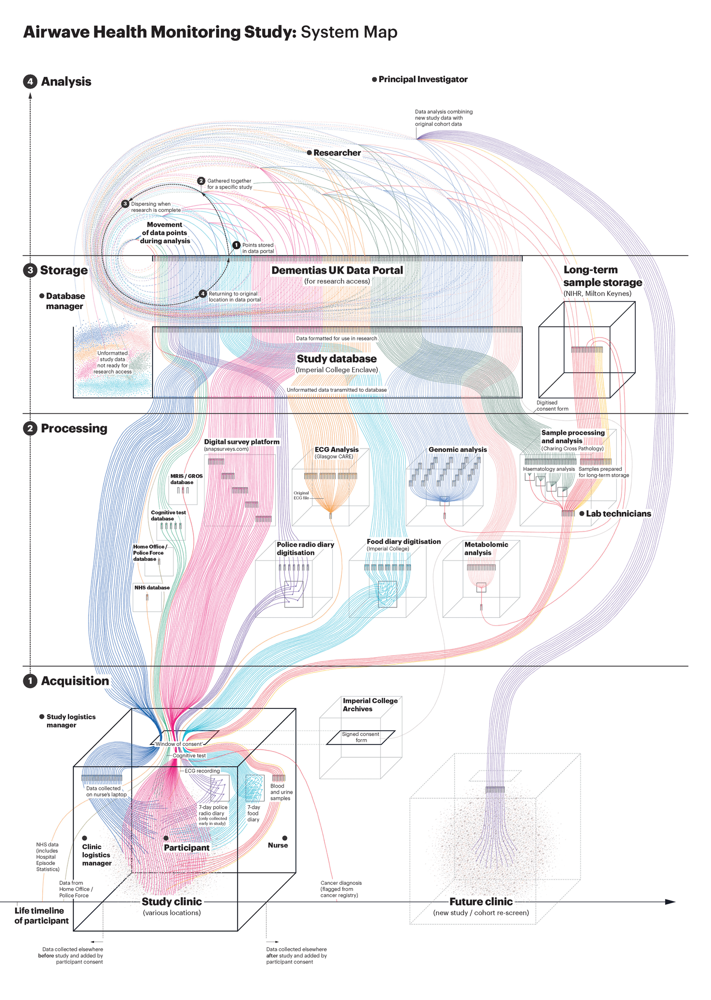

Data murmurations
 2022
2022
 Collège impérial de Londres, Royaume-Uni
Collège impérial de Londres, Royaume-Uni
Ce projet de Stefanie Posavec a été réalisé dans le cadre de sa résidence "Art-as-inquiry" auprès du groupe de recherche britannique People Like You. Le but du projet était d'explorer si le dessin pouvait aider les chercheurs à mieux comprendre des systèmes de données complexes , notamment en examinant comment les données sont utilisées pour personnaliser la médecine et comment les professionnels d'une biobanque perçoivent les donneurs d'échantillons humains derrière des chiffres. Pour ce faire, Stefanie Posavec a mis de côté la visualisation de données traditionnelle, et à commencer à dessiner pour donner un sens aux systèmes de données complexes. Elle a ensuite conçu des diagrammes pour cartographier l'intégralité du processus de la biobanque, qui montre à la fois le flux des échantillons et la manière dont chaque intervenant perçoit le participant.
 
